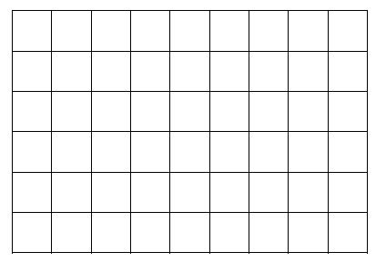

Wszystkich par \((a,b)\) takich, że \(a\in \{1,2,3,4,5,6,7\}\) i \(b\in
\{1,2,3,4,5,6,7,8,9\}\) oraz suma \(a+b\) jest podzielna przez \(3\), jest
A.mniej niż \( 21 \)
B.dokładnie \( 21 \)
C.dokładnie \( 22 \)
D.więcej niż \( 22 \)
B
Liczb ze zbioru \(Z=\{1,2,3,...,36\}\), których nie można uzyskać jako iloczynu
dwóch niekoniecznie różnych liczb ze zbioru \(\{1,2,3,...,6\}\), jest
A.\( 8 \)
B.\( 16 \)
C.\( 18 \)
D.\( 19 \)
C
Liczb naturalnych trzycyfrowych, w zapisie których każda cyfra występuje co
najwyżej raz oraz suma cyfry setek i cyfry jedności jest równa \(4\), jest
A.mniej niż \( 24 \)
B.dokładnie \( 24 \)
C.dokładnie \( 32 \)
D.więcej niż \( 32 \)
B
Ile jest wszystkich trzycyfrowych liczb naturalnych, w zapisie których każda cyfra
jest inna, żadna nie jest zerem oraz jedną z cyfr jest dziewiątka?
A.\( 56 \)
B.\( 168 \)
C.\( 216 \)
D.\( 504 \)
B
Dana jest tabela złożona z sześciu wierszy i dziewięciu kolumn (zobacz rysunek).
Oblicz, ile w tej tabeli można narysować, zgodnie z zaznaczonymi liniami, prostokątnych tabel o
czterech wierszach i czterech kolumnach. 